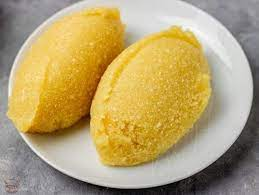

Eba

Eba
Description
Eba is a delicacy common among the yoruba ethnic group of south west Nigeria.
It is mostly called a swallow food and eaten with soups
Ingredients
Steps
- Put the hot water on fire
- Pour the quantity of garri enough for you in a bowl
- wait for the water to boil then pour in the bowl of gari
- Turn till it is soft and blended enough for consumption